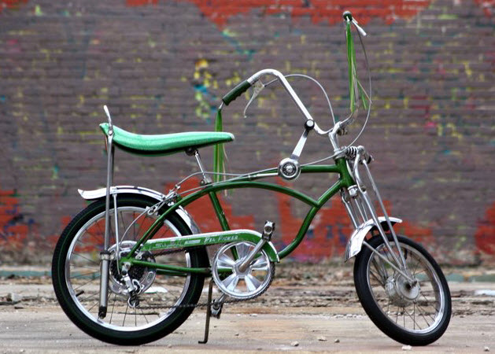

A Classy Bike
Classes in Ruby
March 26, 2016
A while back I accompanied my partner on his quest for a new bike (SPOILER: no, he didn't buy a vintage Schwinn Sting-Ray). He had signed up to do a 7-day, 550-mile fund-raising ride from San Francisco to Los Angeles, and his previous bike was about 100 pounds of stone and bear sinew. OK, that last part is an exaggeration, but seriously, bikes have come sooo far and have substantially diversified since his previous 1990's bike. Still, no matter the great diversity and numbers of bicycles today,there are a lot of attributes and behaviors that all bikes share.
When we write software, we need a way to easily model real-world objects. So as not to constantly duplicate our efforts, it's nice to have a software template from which to create multiple of the same type of object. But no matter how similar two objects are, they also usually have differences. How to resolve this conundrum?
For example, let's say Freewheelin Bicycles Ltd needs to create an inventory of all the bikes it manufactures as well as model, in software, how each bike performs under different conditions. Each time they design a new bike, it has to be represented in the system. All bikes have many types of attributes and behaviors in common. All bikes have a name, a type, a size, a color, a number of speeds, a component set. All bikes can brake, can turn, can switch gears. But each model has different values for these attributes (e.g. type: mountain, road, racing; color: red, black, white) and different methods for performing those behaviors (e.g. brake: hand brake, coaster brake).
The way we make this easier in software is by declaring a Class of Bicycle. A Class is like a template, from which you can specify different specific bikes. A Class contains attributes and behaviors. When you create a new individual copy of a Class, it's called an instance, or an object, of that Class. In Ruby, an instance's attributes are instance variables and an instance's behaviors are methods. In our example, we have the Class Bicycle with attributes name, type, size, color, number of speeds, and component set, and with methods brake, turn, and switch gears. Freewheelin Bicycles Ltd has just come out with a new road model, the Screamer. To represent this in the software, we make a new instance of the Bicycle Class. This instance we'll give the name Screamer, type road, color red. We'll also specify how to brake, turn, and switch gears on the Screamer. The Ruby Class will look like this:
class Bicycle
@name
@type
@size
@color
@num_gears
@component_set
def initialize(new_name, new_type, new_size, new_color, new_num_gears,
new_component_set, new_stock)
@name = new_name
@type = new_type
@size = new_size
@color = new_color
@num_gears = new_num_gears
@component_set = new_component_set
@stock = new_stock
def brake
# code to model braking goes here
end
def turn
# code to model turning goes here
end
def switch_gears
# code to model switching gears goes here
end
end
screamer = Bicycle.new("screamer", "road", 26, "red", 21, "Shimano", 5)
Now, when we want to see how many Screamers there are, or what color it is, we can access the variable screamer.
You've just had a quick, simple introduction to what a Class is, how it works, and how to create one in Ruby. Now scamper off on your Sting-Ray and write some code!
PROVIDE LINK << Previous Post | Blog Home | PROVIDE LINK Next Post >>